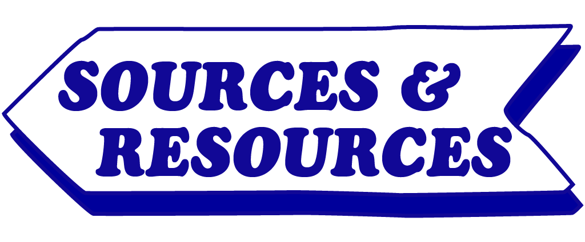
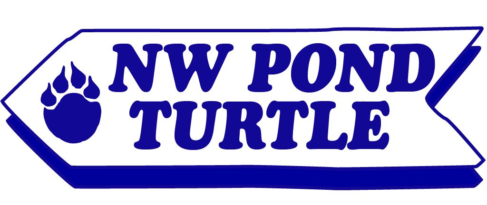

EXPANSION
Take a beat to pause and reflect on what you've explored so far. Before you move on, consider reflecting on these questions...
<><><>
Where or when do you feel most connected to nature, and why?
<><><>
What's one word you'd like to carry forward after finishing this zine?
<><><>
What inspired you the most from what you read or saw?
THE IMPACT
Conservation is more than a collective effort, it's an individual choice as well. Now, you don't have to start BIG or feel overwhelmed with what to do next, trust I got you. Instead, try to practice these small efforts that have big impacts instead...
Turn off lights not in use Recycle and Dispose with intention Shop sustainably & locally When possible walk, bike, or use public transit


